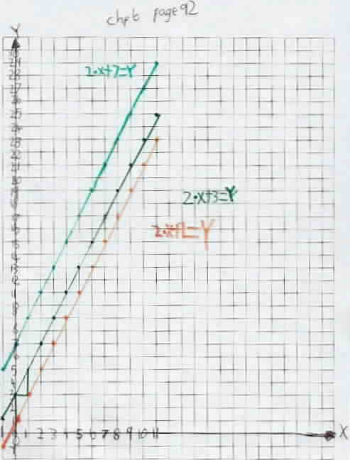
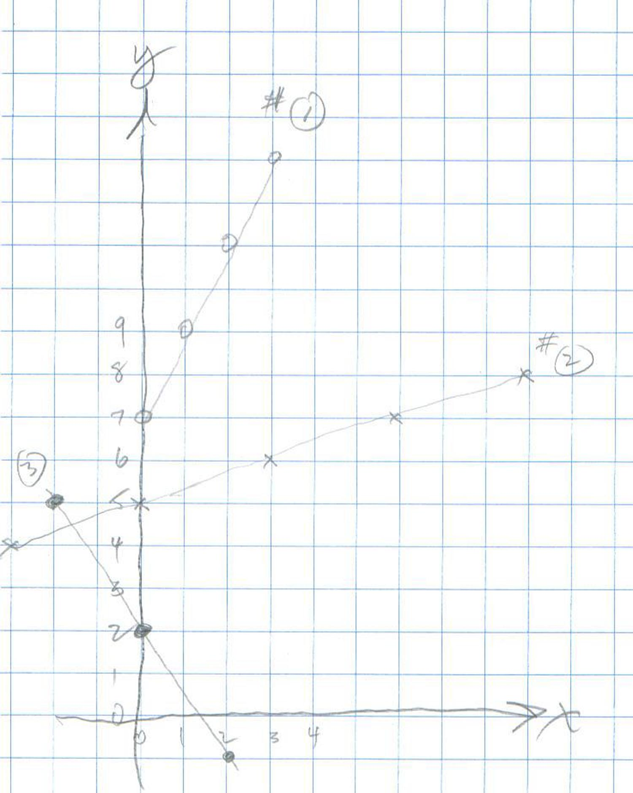
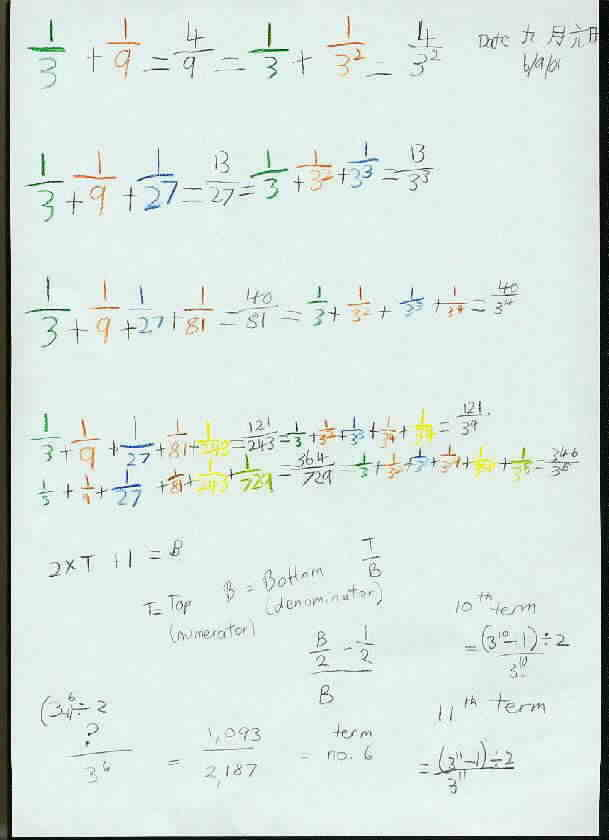
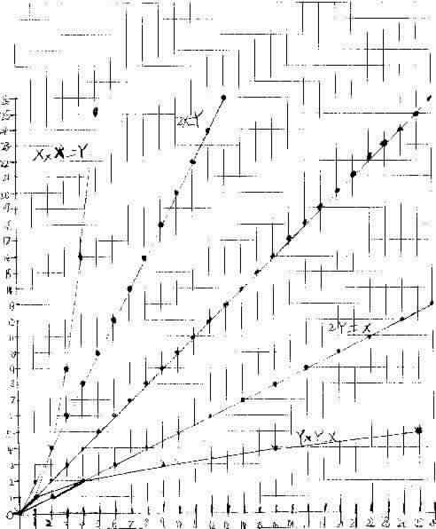

james was doing page 88 Guess my rule today. he also found an old series he
did a few days ago and said it was "double it add 3" well how do you
say that in mathematical language? "Two times, no - two ecks plus three
equals Y. wow I didn't know I could say that!"
I'll send the graph later
cheers,
Carolyn sent James' graphs from p92 in Don's worksheet book.

August 3, 2001: James has been graphing equations in chapter 6 like 2x + 3 = y, and Carolyn wrote the following on AIM: ' I'm trying to say this is great - James has a new tool for visualizing equations/patterns. He can see mentally 'further' up and down the pattern with a graph than he can just with a table or an equation!' [Don says: That was the beauty of what Descartes did..he showed the relationship between the numbers in the table (the arithmetic) and the equation (the algebra) and the patterns in the points (the geometry)].
Don sent via AIM, 3 graphs for James to write the equations for:

August 8, '01 On AIM Carolyn told Don James had figured out the cards for The Magic Number game for base 3. On the original 5 cards in binary, they went up to 31 (1 less than 32, a power of 2). James thought going up to 26 (1 less than 27, a power of 3) would be too small, and 80 (1 less than 81, the next power of 3) would be too large. He decided to go to 38. [One of Don's students on Aug. 13, ended up at 56 for the same problem!]
During this session on AIM, Don's students came in for class at that time. Amanda talked with Carolyn and the other student could hear her from Tasmania, on Don's speakers. Carolyn told us it was her birthday (it was Aug. 9, their time as we talked). We all sang Happy Birthday to her!
Then Don signed off for an hour to work with his students here. We he went back on AIM, this went on:
Carolyn:
so
really he's still having trouble writing equations to describe what he sees
happening on the graph
[James then
came on the microphone and the computer with AIM, and below is
essentially the written conversation
which was saved from AIM, with the oral
conversation going on at the same time (which you can't see or hear)!]
Don:
ok
Don:
2x+ ? = y
Don:
crosses the y-axis at 0,7
James:
2x+7=y
Don:
the equation is 2x+7=y
Don:
right
James:
but i still don't get it
Don:
horizontal axis is x-axis
James:
y=7?
Don:
when x=0, y = 7
James:
so
2x+7=7
James:
2x+7=y
Don:
when x=0, y=7
James:
ok
Don:
when x=1, y=9
James:
9 or
8?
forthferalz
: 2
Don:
8 is right [Don
makes a mistake here!]
Don:
sorry
James:
so
x-i,y=8 [James meant when x=1, y=8]
James:
opps
Don:
yes
James:
===========================
Don:
when x=2, y=9
James:
9
Don:
ok?
James:
y is
olways 7 more than x right?
Don:
when x=2, y=11
James:
you mean James [Don called James, Michael,
his brother's name]
Don:
2x+7=y
James:
yep
Don:
when x=2 , 2x2+7=11
Don:
when x=3, y=?
James:
its
two times x + 7=y
James:
13
James:
ok
Don:
ok
James:
oatmeal??
Don:
my brain is oatmeal
James:
i
eat that stuff
James:
ib
James:
ok
Don:
that's 1b
Don:
over 3 up 1
Don:
the first number is 1/3
James:
1
over 3
Don:
1/3
James:
1
third
Don:
is the first number
James:
ok
Don:
so the equation is 1/3 x + 5 = y
James:
1
third of x + 5 = y right?
Don:
yes
James:
okkkkkkkkkkkkkkkkkkkkkkkkkkkkk
9/6/01
Hi Don,
Can we stop for a fortnight? They have school holidays next week. James did some stuff today. Sending it later. I would like to get into more of a routine where he does a tiny bit everyday and we chat online once a fortnight, or where he does a lot intensively for a few days once a month. He's quite slow and he has a lot of other 'regular' maths to learn too.
David is keen to do some stuff - he has tried the stuff on page 15 too but can't see how it goes to a half.
Carolyn
9/6/01
Dear Don,
late reply - OK? Have James start the quadratic equations. Did he find the equation for graph #3? [no]. Did he check graph #2? [no] Start on fibonacci numbers p129. [Maybe next month!]
How about starting with a 9 by 9 square on the graph paper and work on 1/3 + 1/3 of 1/3 + 1/3 of 1/3 of 1/3 ... (or 1/3 + 1/9 + 1/27...) [ok he's done that. but I'm pretty sure it's not all that clear to him what you want - at first he started colouring in a quarters of a squares by accident
- he didn't draw a nice obvious square outlined thickly in black and I think he just sort of got 'lost'. And he had some pretty strange answers for the questions initially. i'm not sure what he was thinking of. he thought the partial sums progress to one, then he thought it goes to 243.
however he saw a pattern in the colouring in and cut out his shape and rearranged them to get oblongs stacking to the left and cubes stacking on the right. So we worked through it and it is clearer now i hope. using his graph he can see that if you draw a diagonal line that cuts from the top L corner to the bottom R and cut out the little end of the oblongs that stick over the line they fit next to the square of the next term and the whole series will never cross the halfway line.
cheers,Carolyn
might chat to you online tonight


Notice the date written in the upper right corner was 6/9/01. That is the 6th day of the 9th month of the year 2001.
September 30, 2001
Carolyn sent Don James' graph below via AIM. Carolyn and Don talked about the patterns in the parabola, the curve, x*x=y.
Don suggested to Carolyn
1.) that James make his graphs so the origin (0,0) is not in the lower left
corner so he could plot negative numbers for x.

2.) The slope of the parabola
changes, which makes it a curve, not a straight line when the slope is the same
everywhere. Starting at (0,0), you go over 1 to the right and up 1 to get
to the next (integral) point. From (1,1) you go1 to the right and 3 up. Then
from (2,4) you go1 to the right and 3 up, then 5 up, then 7 up and so on. Why
because 1+3=4=22 and 1+3+5=9=32 ,.., so the sum of the odd
numbers is a square number- and x*x = x2 , a square.
3.) Don worked with James about multiplying negative numbers because Don wanted
him to graph x*x=y when x= -3. So what is -3 x -3?
Don used the pattern below from Sheri's page to help James get -3 x -3
= 9.

3.) It was James' idea to switch the x and y
and graph y*y=x. That was a great idea James!
4.) Don worked with Carolyn on the differences in the y's, then the differences
in the differences, which are all 2. The differences in consecutive odd numbers
is 2. And the fact that the 2nd difference
is constant, means the function is 2nd
degree (x2).
To order Don's materials
Mathman home